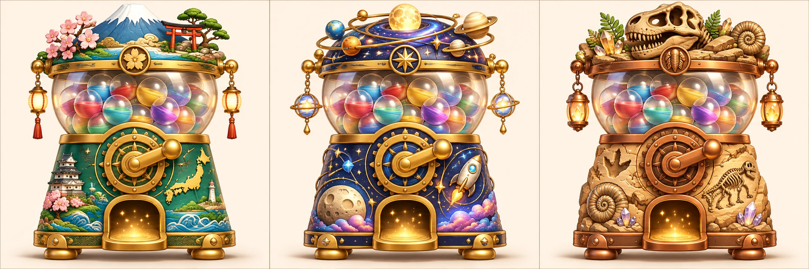
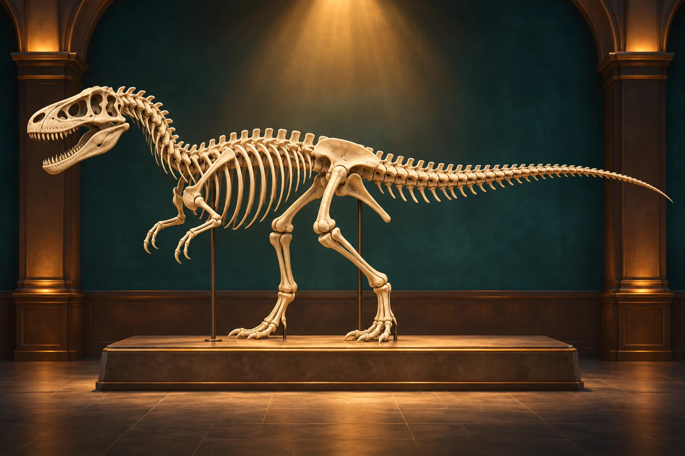
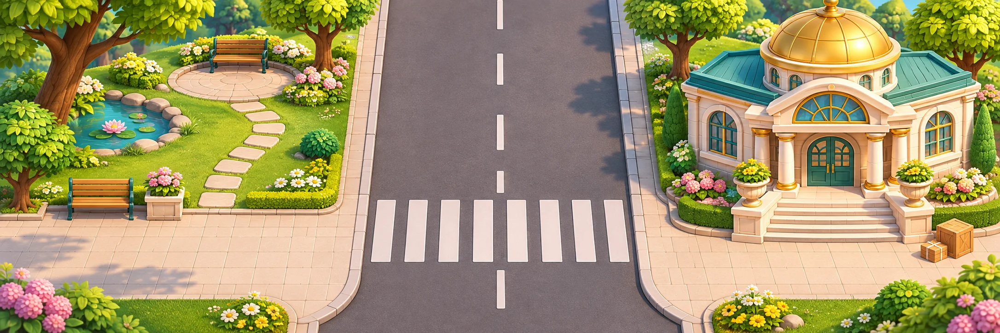

遊んで発見。
自分だけのミュージアムへ。
2026年11月5日 · museum版
アプリを開く →今日からの遊び方
ひらめきラボ → ランダムであそぶ → 星を集める → 好きなガチャ台 → ミュージアムに展示
相棒を選び、毎回違う３つのゲームへ進みます。ラボ・ラッシュ・記憶・宝箱の暗号などを混ぜ、同じコース内では種類が重ならないようにします。交通安全の優先設定が有効なら配送ゲームも候補に入り、手に入れた県や展示品も遊びの候補になります。個別のゲーム選択も残します。
３台のガチャポン

日本
47都道府県。手に入れた形は地図パズルにも登場。
惑星
水星から海王星まで８惑星。太陽からの順に展示し、絵合わせにも登場。
化石
頭・背骨と肋骨・尾・後ろ足・前足・腰の６部位。そろうと全身骨格の展示が開きます。
１回★５。未入手のものから等確率に抽選し、重複はありません。現金・課金は使いません。台をコンプリートすると星を消費しません。ハンドル回転→台が揺れる→カプセル落下→タップで開封。演出はスキップできます。
星の消費と景品は、演出開始前にまとめて保存します。演出中に画面を離れても景品は残り、「前回のカプセルを見る」で確認できます。既存の購入済みの県と星も維持します。
自分の展示室
「集めて日本を完成」のホーム文言を外し、ミュージアムへ変更しました。県の地図、惑星の展示、化石の展示を切り替えます。手に入れた展示品をタップすると「きょうの主役」として飾れます。
具体例① 地球を主役にする。② 好きな県を地図へはめる。③ 化石６部位をそろえて全身骨格の展示を開く。

惑星の大きさ・距離、化石の形は模式的なイラストです。正確な縮尺図や特定種の解剖図としては扱いません。
お絵描きとカード
| 変更 | 使い方 |
|---|
| 選択表示 | 道具を選ぶと濃い色と金の輪郭で光り、「選択中」を表示。自由描画・ぬりえ・3D・作品展の切り替えも上部へ。 |
| 文字の収まり | 道具を折り返して表示。２段でも文字を切らず、紙の領域を残します。 |
| バケツ | 見えている線を境界にして、選択中のレイヤーへ塗ります。元に戻せます。 |
| 全消し | 確認後に全レイヤーを消します。保存済みカードは残り、元に戻せます。 |
| 色混ぜ | 選んだ色と、見えている絵の色を混ぜます。赤に青を混ぜる画素検証を追加しました。 |
| 完成カード | 金の縁、タイトル帯、原画、説明欄、番号を持つ独自フレーム。カード帳・詳細・PNG書き出しを同じ描画へ統一。 |
| カード帳 | 見開きの本、透明の６ポケット、ページをめくる演出。カードを開くと大きく見られます。 |
利点：描画中の状態が見えること、作品をカードとして残す楽しさ、集めたものを遊びに再利用できることです。
制約：道具が増えた分、紙の表示領域は少し小さくなります。バケツは線のすき間があると広く塗られることがあります。ぼかし・色混ぜは引き続き軽量なブラシで、専門のイラストソフト相当ではありません。
配送ゲームへ置き換え
旧「飛び出さない練習」の選択肢形式を外しました。公園からミュージアムへ荷物を届けます。歩くボタンを押している間に進み、道路の前で止まり、信号と左右の車を確認して渡ります。一時停止中は進行用の時計も止まります。

画面内では安全柵として道路手前で止めています。実生活の安全行動を身に付けたと判定する機能ではありません。
検証と残る確認
PCの専用ブラウザで、22画面の遷移、既存ゲームの呼び出し、描画、色混ぜ、バケツ・全消しと取り消し、カード、バックアップ復元、ガチャ３台、星の二重消費防止、展示、絵合わせ、配送の一時停止、地図、数ブロック、素材のオフライン保存を確認しています。
iPad Air 2実機の速度・タッチ感、Safariでの書き出しは未確認です。動画生成ツールは利用できないため、今回は生成した静止画とコードのアニメーションを使っています。GitHubへのアップロードは未実施です。
画像生成：組み込みの画像生成ツールを使用。６ファイルに、３台・８惑星・６部位・背景・全身骨格・街を収録。追加画像はWebPへ変換し、合計約1.7MBです。使用したプロンプトと素材の対応